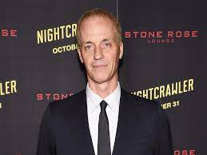

General presentation
Nightcrawler is a 2014 American neo-noir satirical crime thriller film directed and written by Dan
Gilroy in his directorial debut and co-produced by and starring Jake Gyllenhaal as Louis "Lou"
Bloom, a stringer who records violent events late at night in Los Angeles and sells the footage to a
local television news station. The film also stars Rene Russo, Riz Ahmed, and Bill Paxton. A common
theme in the film is the symbiotic relationship between unethical journalism and consumer
demand.
Gilroy originally wanted to make a film about the life of American photographer Weegee but switched
focus after discovering the unique narrative possibilities surrounding the stringer profession. He
wrote Lou as an antihero, based on the ideas of unemployment and capitalism. Gyllenhaal played a
pivotal role in the film's production, from choosing members of the crew to watching audition tapes.
Filming took place over the course of four weeks and was a challenging process that included over 80
locations.
It has a 7.8/10 rating on IMDB.
Director
Background
Dan Gilroy was born in Santa Monica, California, the son of Pulitzer Prize-winning playwright
Frank D. Gilroy, and sculptor and writer Ruth Dorothy. His brother Tony Gilroy is a screenwriter
and director; and his fraternal twin brother, John Gilroy, is a film editor. Through his father,
he is of Italian, Irish and German descent.
Gilroy wrote the script for 2005 gambling drama Two for the Money (2005), starring Al Pacino and
Gilroy's wife Rene Russo. His earliest credit is as co-writer of science fiction thriller
Freejack (1992), followed by co-writing Dennis Hopper-directed comedy Chasers. He was also one
of the writers to contribute to the unmade Superman film Superman Lives.
Coming up with "Nightcrawler"
Gilroy conceived the idea for Nightcrawler in 1988, after reading the photo-book Naked City, a collection of photographs taken by American photographer Weegee of 1940s New York City residents at night. Often lewd and sensationalized in content, Weegee would sell these photos to tabloid newspapers. Intrigued by what he described as "an amazing intersection of art and crime and commerce", Gilroy wrote a film treatment with a "Chinatown feel". He shelved the idea after the release of The Public Eye (1992), which was loosely based on Weegee's life. Two years later, he moved to Los Angeles, and noted the predominance of violent crime stories on local news stations. "I suddenly became aware of and intrigued by the idea that it must be a powerful force for a TV station, when they realize their ratings go through the roof when they show something with the potential for violence, like a police chase", says Gilroy. Sometime later, he discovered the stringer profession, and considered it to be the modern day equivalent of Weegee. Unaware of any film that focused on the livelihood of stringers, he began writing a screenplay. Gilroy spent several years trying to write a plot that would fit the setting, and experimented with conspiracies and murder mysteries as central story elements. Eventually, he decided to instead start by designing the characters, and attempted to create a standard literary hero character. Unable to create an interesting hero, he then envisioned an antihero as the lead character. Gilroy felt antiheroes were a rarity in films, because they are difficult to write, and usually devolve into psychopaths; in an attempt to break from the stereotype, he thought of writing an antihero success story. Several films, including The King of Comedy (1982), To Die For (1995), and The Talented Mr. Ripley (1999), were used as research on how to write antiheroes.
Characters and Cast
Jake Gyllenhaal in the role of Lou Bloom.
Bloom is a grubby small time criminal with no moral fiber at all. Although he is intended to be an
anti-hero it is hard to see him in any type of heroic light at all. He loves filming criminal
activity; he feels comfortable amongst the criminal element and will stop at nothing to get what he
wants.Rene Russo in the role of Nina Romina.
Nina is a hard-nosed journalist who runs the newsroom and wants to make sure that her channel stays
one step ahead of the other networks when it comes to giving viewers what they want. She also knows
that viewers want the shocking, the salacious and the downright voyeuristic, because every time she
features this her ratings go up. She also knows that crime against affluent people gets far more
attention than crime against residents of Los Angeles' more disadvantaged areas. Nina has no line to
cross when it comes to getting a story. There is nothing she believes off limits.Riz Ahmed in the role of Rick
Rick is Lou's first assistant and thinks in the same way his employer does; he also tries to shake
Lou down for a raise, using what he knows about the way in which he gets his stories as
leverage.Bill Paxton in the role of Joe Loder
Joe is the first person to explain to Lou what a stringer is - he is one of the men Lou watches
filming the scene of the crash he drives by on his way home from selling stolen materials to a scrap
dealer.Resume
Petty thief Louis "Lou" Bloom is caught stealing from a Los Angeles railyard by a security guard. He attacks the guard, steals his watch and leaves with stolen material. After selling the material at a scrap yard, Lou asks for a job, but the foreman says he does not hire thieves. While driving home, Lou sees a car crash and pulls over. Stringers—freelance photojournalists—arrive and record two police officers pulling a woman from the burning wreck. One of the stringers, Joe Loder, tells Lou that they sell their footage to local news stations. Inspired, Lou steals a bicycle and pawns it for a camcorder and a police radio scanner. After two unsuccessful attempts at recording incidents, Lou records the aftermath of a fatal carjacking and sells the footage to KWLA 6. The morning news director, Nina Romina, tells him the station is especially interested in footage of "graphic" accidents and violent crime in affluent, White areas. Lou hires an assistant, Rick, a young homeless man desperate for money. To give his footage more impact, Lou tampers with crime scenes, in one case moving a body to get a better camera angle. As Lou's work gains traction, he buys better equipment and a faster car. Lou pressures Nina into a date, telling her he knows she is desperate for higher ratings. On their date, he threatens to terminate his business with Nina unless she has sex with him, and it is implied that she acquiesces. Lou turns down an offer to work for Joe, but when Joe beats him to an important plane crash story, Nina demands that Lou get better footage and keep his end of their bargain. In retaliation, Lou sabotages Joe's van; when it crashes, Joe is severely injured and Lou records the aftermath. Later, Lou and Rick arrive before the police at the site of a triple-homicide home invasion in Granada Hills. Lou records footage of the gunmen leaving in their SUV and of the victims in the house and later presents footage to the station with the perpetrators edited out. The news staff frets over the ethics of the footage but Nina is eager to break the story. In exchange, Lou demands public credit and more money. Police detective Frontieri shows up at Lou's apartment to question him about his connection to the home invasion. He gives her edited footage of the incident, cutting out the parts with the gunmen. That night, Lou and Rick track down the driver to his house, staking out the house until he leaves to pick up his partner. Lou wants to follow them to a more crowded public area, then call the police and record the ensuing confrontation. Alarmed, Rick demands half the money Lou stands to make, threatening to tell the police about Lou's withholding of evidence; Lou agrees. When the gunmen stop at a restaurant, Lou phones the police, warning them that the suspects are armed. They arrive and exchange gunfire. A police officer is shot and one of the killers is gunned down while the other manages to escape in the SUV. The police give chase with Lou and Rick tailing and recording, culminating in a long multiple-car collision.